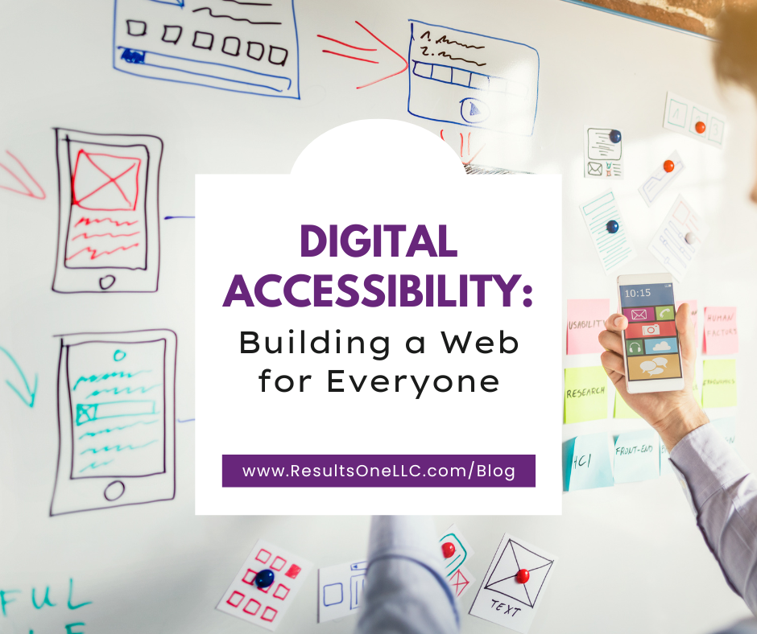

Digital Accessibility: Building a Web for Everyone

Why Your Website Needs an Open Door
Imagine arriving at a beautifully designed building, only to find the main entrance is up a flight of stairs and there’s no ramp or elevator. You’ve been excluded from what lies inside, not because you don’t want to enter, but because of a preventable design choice.
This happens every day in the digital world.
Digital accessibility is the practice of designing and developing websites, applications, and digital content so that people with disabilities can perceive, understand, navigate, and interact with them. This isn’t just about screen readers for the blind; it encompasses:
- Visual Impairments: (Blindness, low vision, color blindness)
- Hearing Impairments: (Deaf or hard of hearing)
- Motor Disabilities: (Limited use of hands, inability to use a mouse)
- Cognitive Disabilities: (Learning disabilities, ADHD, memory impairments)
The Triple Bottom Line: Why Accessibility Pays Off
While the moral imperative is strong, the benefits of digital accessibility extend far beyond simply “doing the right thing.”
- The Business Case: Expanding Your Audience
The World Health Organization (WHO) estimates that over one billion people live with some form of disability. By making your digital presence accessible, you are instantly opening your business to a massive, underserved market. Furthermore, accessible design often leads to a better user experience (UX) for everyone, including:- People using mobile devices in bright sunlight (need for higher contrast).
- Older adults whose eyesight or fine motor skills are changing.
- Users with slow internet connections (cleaner, leaner code).
- The Legal Case: Reducing Risk
Accessibility is increasingly a legal requirement. Depending on your location and industry, compliance with standards like the Web Content Accessibility Guidelines (WCAG) may be mandatory. Ignoring accessibility can expose you to expensive litigation and reputational damage. - The Ethical Case: Inclusion and Equality
Ultimately, the internet should be a public square—a place for learning, commerce, and connection. When we fail to design inclusively, we deny basic rights and opportunities to a significant portion of the population. Accessibility is a commitment to digital equality.
Three Quick Accessibility Fixes You Can Implement Today
Don’t feel overwhelmed. Starting with a few key areas can make a huge difference.
- Perfect Your Images with Alt Text
Screen readers rely on Alternative Text (Alt Text) to describe an image to a user who cannot see it.- ❌ Poor Alt Text: image_2025.jpg or Image of a person.
- ✅ Good Alt Text: A woman wearing glasses types on a laptop while smiling at the camera, conveying focus and productivity.
Tip: If an image is purely decorative (like a separator line), use alt=“ ” so the screen reader skips it.
- Check Your Contrast Ratios
Low color contrast makes text difficult to read, especially for people with low vision or color blindness.
Action: Use a free online Color Contrast Checker to ensure your text and background colors meet the WCAG 2.1 AA standard (4.5:1 for normal text). Dark grey text on a light grey background often fails this test. - Ensure Keyboard Navigation
Many users, including those who are blind or have motor control issues, navigate websites exclusively using the Tab key and other keyboard shortcuts.
Action: Try navigating your entire website without touching your mouse.- Can you reach every link, button, and form field?
- Does the visual focus indicator (the outline that shows you where you are) clearly show up? If not, you need to fix your CSS.
The Journey Starts Now
Digital accessibility is not a one-time project, but an ongoing commitment. By making these small changes, you begin the essential work of tearing down digital barriers and making your corner of the web a more welcoming, functional place for all.
How accessible is your website? Click here to schedule a consultation for a free website assessment.